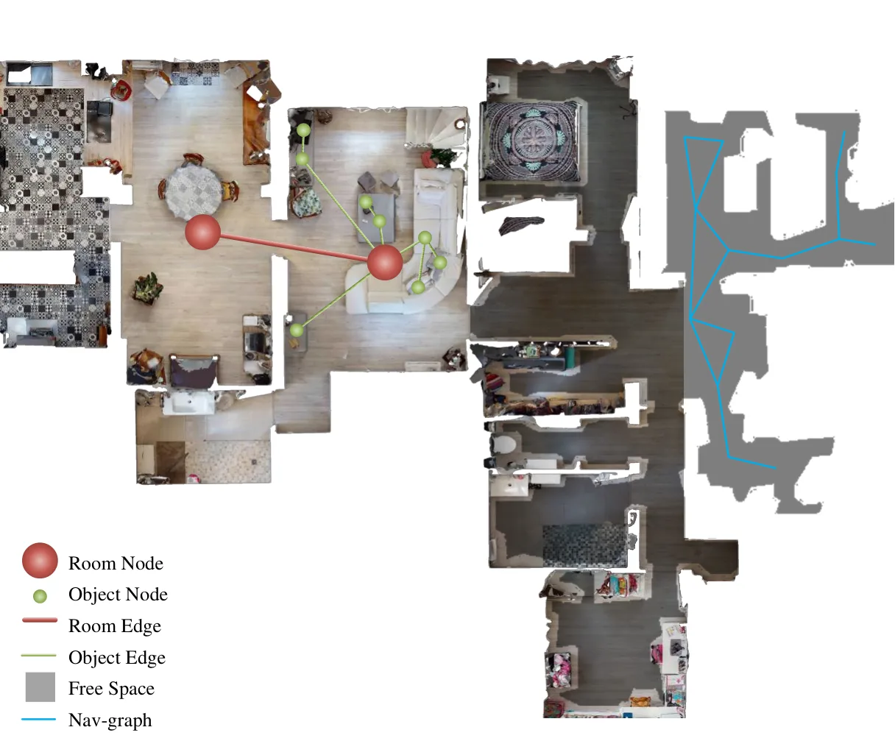

Object–Path Graph：开放词汇实例导航的拓扑表示
A Topological Representation with Object-Path Graphs for Open-Vocabulary Instance Navigation
在 HM3D、Replica 与真实机器人实验中验证；导航直接在图上进行，不依赖稠密 metric reconstruction。
作者、单位与技术谱系 · Research context
作者与单位
研究脉络
- scene graph semantic memory方法上游关系：本文继承场景图的对象关系表达，但把它与下游导航执行耦合。[arXiv 官方 HTML v1]
- topological navigation方法基座关系：path-level graph 直接编码可通行连接，避免每次导航依赖稠密 metric map。[arXiv 官方 HTML v1]
合作网络
- Object–Path GraphHKUST(GZ) → 作者团队关系：共同署名/作者单位[arXiv 官方 HTML v1]
- Object–Path GraphHM3D / Replica → Object–Path Graph关系：公开实验依赖[arXiv 官方 HTML v1]
作者和单位是原文事实；技术脉络是基于公开原文/项目关系的解读；未据此推断导师或师生关系。
方法本质拆解 · What actually changed
训练/参数
原文显示该方法基于现有模型或策略进行训练/评估，具体参数冻结与训练预算以原文为准。该条只记录已核验的系统层事实，不把推测写成配置。
约束与条件
方法把几何、时间、语义或动作表示作为额外条件。约束作用位置和是否硬约束以论文公式与实验协议为准。
推理流程
推理包含结构化表示、滚动执行或激活/策略处理。它不是凭标题推断的传统后端优化。
方法本质
核心是把空间证据接入决策变量，使模型在输入变化或长时程执行中保留可验证的几何/语义状态。
输入观测与结构化先验 + 作用于表示/动作的约束或聚合 + 闭环执行/干预 → 提升空间决策可靠性。

桥接价值Bridge
桥接价值
它把底层几何地图的依赖从稠密 metric reconstruction 降到可导航拓扑与对象关系。对可靠导航而言，图节点/边可以成为比连续地图更易审计的语义状态。
方法与模块Method
方法摘要
object graph 编码开放词汇实体和关系，path graph 编码可通行连接；全局 path planning 后由轻量 node localization 与 semantic visual servoing 执行节点间运动。
可迁移模块
可迁移的是对象查询、层级图检索、拓扑边评估和语义视觉伺服。它适合与几何前端结合，在不确定时回退到局部 metric tracking。

证据Evidence
关键证据与数字
论文明确在 HM3D 与 Replica 上做 object query、scene graph retrieval、edge-navigation 与 ablation，并追加 real-world robot validation；具体成功率、边准确率和数据规模待核验。
边界与下一步Limits & Next Step
边界与风险
拓扑图的可执行性依赖节点初始化、可通行性判断和视觉定位；图错连或开放词汇误识别会造成全局路径级错误。没有稠密几何时，精细避障和尺度控制需要额外局部控制器。
下一步实验
给图节点和边附带定位协方差、可通行置信度与时间戳，比较纯拓扑、拓扑+局部 metric 和稠密地图三种配置。报告长程成功率、路径长度、重定位次数、碰撞率和图更新成本。